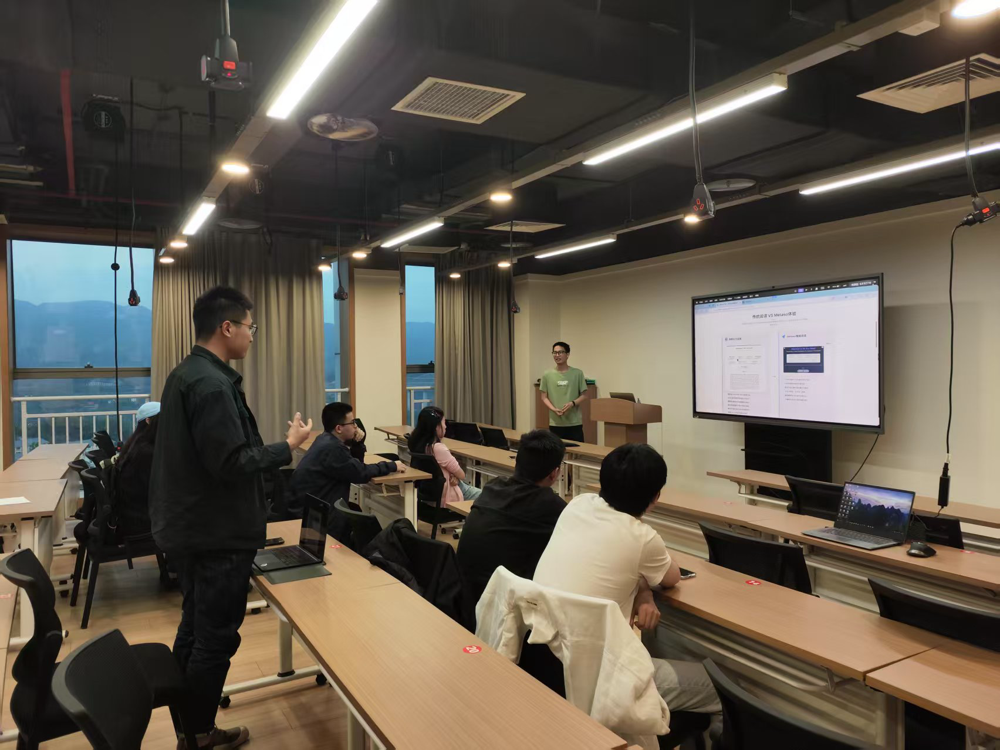

线下交流活动
记录我们的精彩瞬间
在这里，我们记录了AI时代探索的线下交流活动中的精彩瞬间。通过这些照片，您可以感受到我们的活动氛围和参与者的热情。 我们期待在未来的活动中与更多对AI感兴趣的朋友相遇！
活动照片墙
按日期浏览我们的活动照片
2025-4-24



加入我们的线下活动
期待与您在下一次活动中相见
活动频率
我们每月举办1-2次线下交流活动，涵盖AI技术分享、实践工作坊等多种形式
活动地点
活动通常在大学校园或科技园区举行，具体地点将在活动前通知
参与方式
关注我们的公众号或社交媒体，获取最新活动信息和报名方式